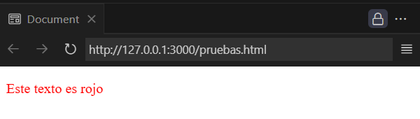
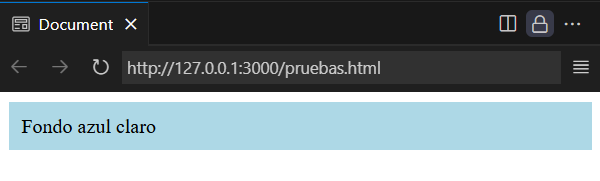
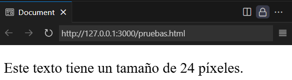
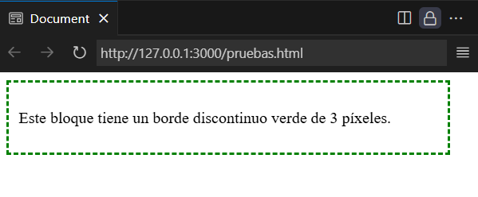

Sección CSS - Web4U

CSS, que significa Cascading Style Sheets (Hojas de estilo en cascada), es un lenguaje utilizado para definir la presentación visual de un documento web, principalmente escrito en HTML.
En otras palabras, CSS se encarga de darle estilo, color, diseño y formato a una página web, separando la estructura (HTML) del diseño.
En más detalle:
Separación de contenido y presentación
CSS permite separar la estructura del contenido de una página web (HTML) de su apariencia visual, lo que facilita la gestión y el mantenimiento del diseño.
Estilos visuales
CSS define cómo se muestran los elementos HTML en la pantalla, incluyendo colores, fuentes, tamaños, márgenes, bordes, posicionamiento y otros aspectos visuales.
Hojas de estilo en cascada
CSS utiliza un sistema de "cascada" para aplicar estilos, lo que significa que los estilos se pueden definir en diferentes niveles (por ejemplo, estilos globales, estilos de página, estilos de elementos)
y se combinan para determinar la apariencia final del documento.
Ventajas
CSS facilita la creación de diseños web consistentes y atractivos, permite cambios rápidos en la apariencia de una página sin modificar el contenido, y ayuda a mantener un código más limpio y organizado.
Uso en conjunto con HTML
CSS trabaja en conjunto con HTML, que define la estructura y el contenido de la página web. HTML proporciona la información y CSS le da estilo.
La propiedad color en CSS se utiliza para definir el color del texto de un elemento.
Puede recibir valores en formato nombre (red, blue), hexadecimal (#FF0000), RGB o HSL.
Ejemplo:
<p style="color: red;">Este texto es rojo</p>
En este caso estamos otorgando al texto que encierra la etiqueta <p> la propiedadd que hace que el color del texto aparezca en rojo.
Resultado en el navegador:
Este texto es rojo
Imagen capturada del navegador:
Más información: W3Schools | Descargar PDF
La propiedad background-color se usa para establecer el color de fondo de un elemento HTML.
Se puede usar para resaltar texto, secciones u otros bloques de contenido. Acepta valores por nombre en inglés, hexadecimal, RGB o HSL.
Ejemplo:
<div style="background-color: lightblue; padding: 10px;">
Fondo azul claro
</div>
En este caso se le está otorgando el color de fondo azul claro al espacio que ocupará el elemento <div>
Resultado en el navegador:
Imagen capturada del navegador:
Más información: W3Schools | Descargar PDF
La propiedad font-size se utiliza para definir el tamaño del texto.
Admite unidades absolutas (como px, pt) y relativas (como em, rem, %).
1 rem equivale a 1.6 px
Ejemplo:
<p style="font-size: 24px;">
Este texto tiene un tamaño de 24 píxeles.
</p>
Resultado en el navegador:
Este texto tiene un tamaño de 24 píxeles.
Imagen capturada del navegador:
Más información: W3Schools | Descargar PDF
La propiedad text-align se utiliza para alinear horizontalmente el texto dentro de un contenedor.
Valores más usados:
left: alinea el texto a la izquierda (por defecto).
center: centra el texto.
right: alinea el texto a la derecha.
justify: justifica el texto a ambos lados del contenedor.
Ejemplo:
<div style="text-align: center; padding: 10px;">
<p>Este párrafo está alineado al centro.</p>
</div>
Resultado en el navegador:
Este párrafo está alineado al centro.
Imagen capturada del navegador:

Más información: W3Schools | Descargar PDF
La propiedad border se utiliza para aplicar un borde alrededor de un elemento HTML.
Se puede definir en una sola línea usando: border: ancho estilo color;
Valores más comunes:
Ancho: grosor del borde (ej: 1px, 3px)
Estilo:
solid: línea continua
dashed: línea discontinua
dotted: línea de puntos
none: sin borde
Color: puede ser un nombre (green), código hexadecimal (#00ff00), RGB, etc.
Ejemplo:
<div style="border: 3px dashed green; padding: 10px; width: 40%;">
<p>Este bloque tiene un borde discontinuo verde de 3 píxeles.</p>
</div>
Resultado en el navegador:
Este bloque tiene un borde discontinuo verde de 3 píxeles.
Imagen capturada del navegador:
Más información: W3Schools | Descargar PDF